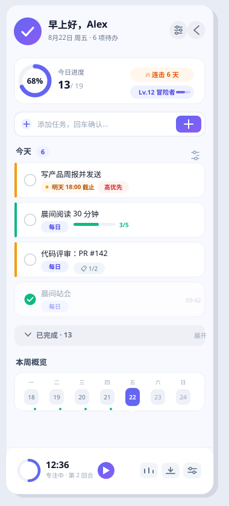
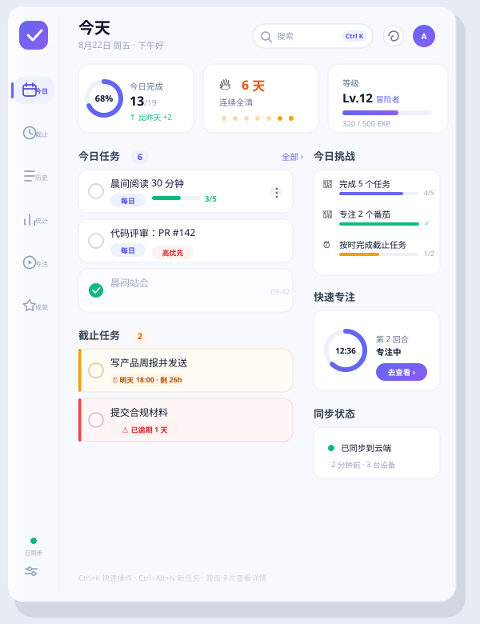
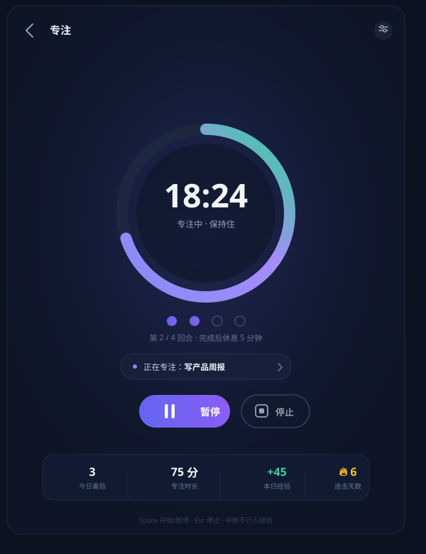
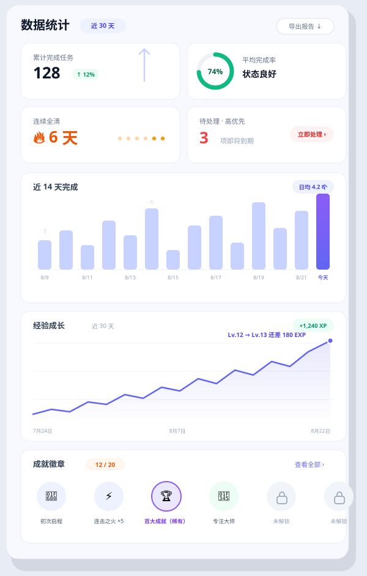

「每日任务」是一款双模式 Windows 待办应用：320px 贴边侧边栏随时瞄一眼，完整仪表盘深度管理。内置番茄钟、经验等级、连续全清与成就徽章——让坚持这件事，看得见也上瘾。

从记录到回顾，从专注到激励——每个模块都为“每天多用一次”而设计。
320px 贴边侧边栏不占工作区，鼠标靠近即展开；640px 完整仪表盘承载六大页面，一键互切。
近 14 天完成柱状图、30 天趋势折线、完成率环——自研轻量图表，数据一目了然。
经验等级 × 连续全清连击 × 20 枚成就徽章。完成任务不再是清单打勾，而是升级打怪。
25 分钟渐变大环、回合圆点、任务绑定；侧边栏迷你番茄随时暂停，数据全部计入成长。
多设备实时同步、冲突自动合并；断网照常用，联网增量上传，本地 SQLite 永不离线。
亮暗双主题语义化配色 + 五套强调色（靛蓝/海蓝/落日/松林/黑白）即时换肤，矢量图标全程锐利。
扁平卡片 · 柔和圆角 · 单一强调色。所有界面都遵循同一套设计令牌。


